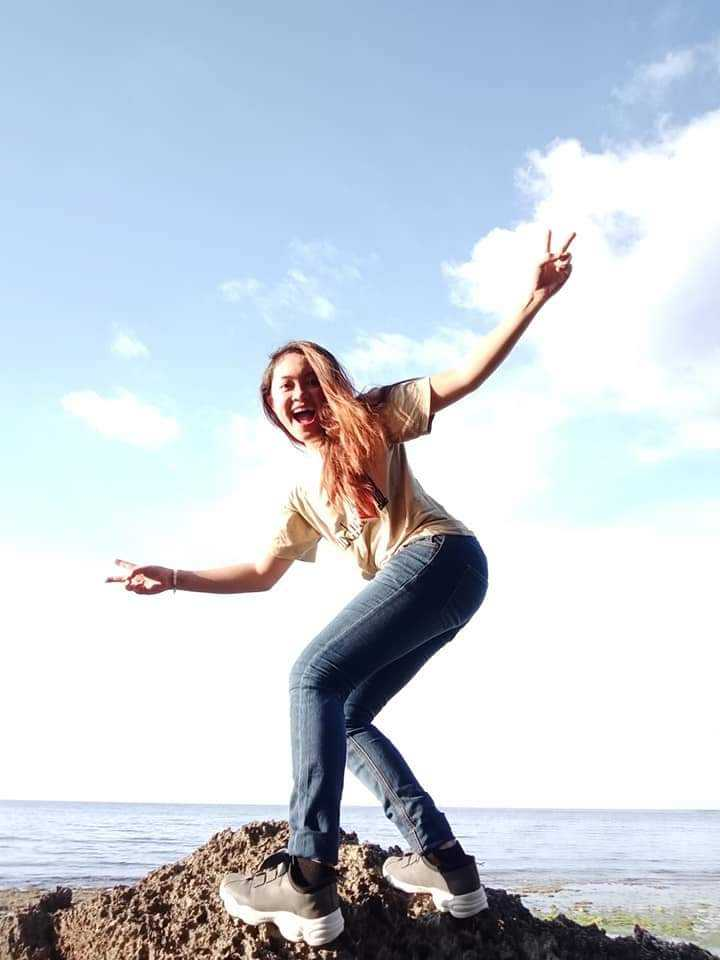

AiOftheW8rld
Travel Diary
Get to know about me
I am a traveller first & Travel Blogger Later I am a curious girl who loves to wander around to create memories and learn new things.
More than destinations; I love meeting people and indulge in heartfelt conversations. I find joy in all the small things in life. Sometimes an exchange of smile with a stranger can uplift my mood.
Emotions run high in my life. So, I do tend to get very emotional (a bit too much) about the places I like and people I love. A hopeless romantic by nature, this curious girl doesn’t endorse any rude behaviour from anyone. And, hey…I prefer the countryside anytime over cities, anywhere in the world.
